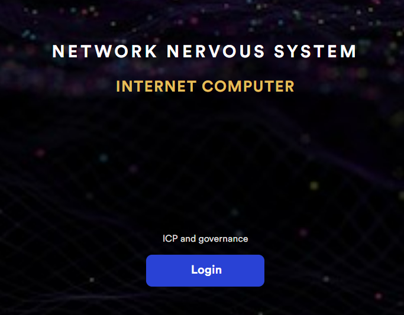
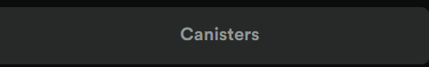
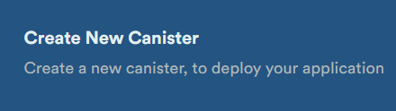
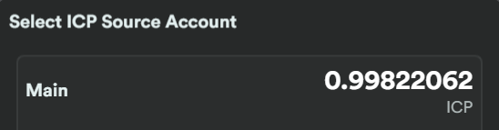
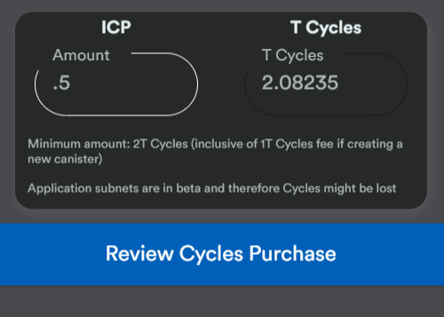
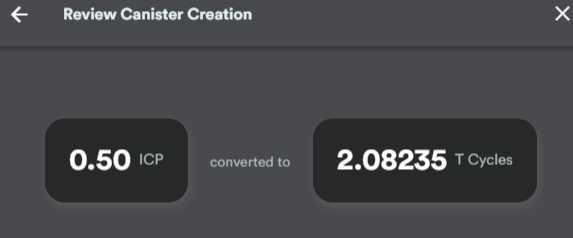
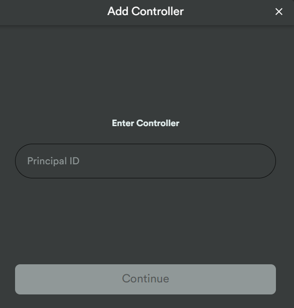
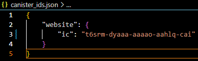

Create your first canister

Requiments
* A wallet that you can login on nns
* A couple bucks worth of ICP on you wallet address
* A computer with the sdk of DFX installed
Setting up canister
- Sign in you nns account to start once you have added funds 
- On the top right click the canister button 
- Click the blue button that says create or link a canister
- Now Select create a new canister 
- Select the wallet you want to use to add cycles to the canister 
- Enter the amount you would like to use, create one cost you 1 cycle so what ever you add minus one will be whats left 
- Going to want to click confim once you review to make sure eveyrthing is correct 

Creating the project and connecting canister to it
- You are going to want to create the project where dfx is installed
- You can look at what we are building and deploying HERE!
- Clone the project Copy Text
- Now get your princle ID by runing this command Copy Text
- You will now need to copy the princile ID so we add it as a controller in the canister 
- Copy the canister ID now, so we can tell the project which canister we will deploying too
- Open the project in whatever you are using, I like atom and VS Code myself for this and change the canister_ids.json to your canister 
- Now we deploy to the IC Network! Copy Text
git clone https://github.com/chalkyjason/ICP4SimpleWebsite.git
dfx identity get-principal

dfx deploy --network ic --no-wallet